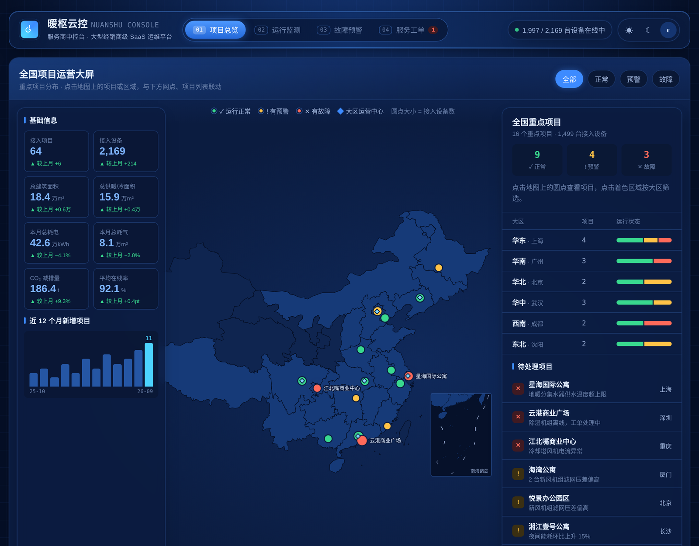
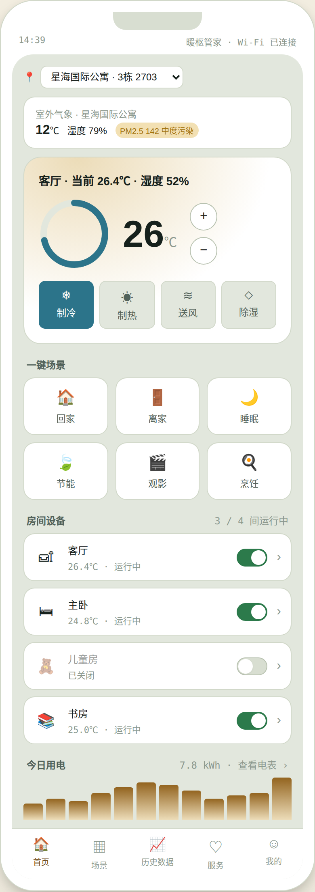
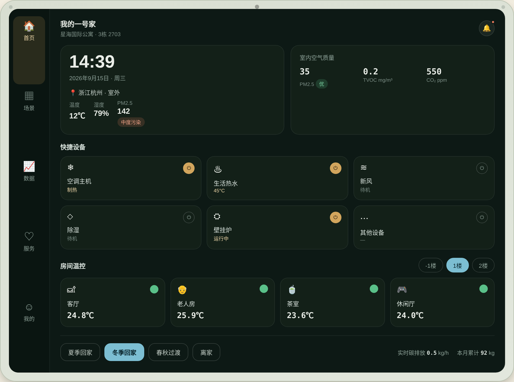

暖枢是一套面向暖通（HVAC）行业的物联网运维产品体系。项目以一份行业参考方案的三层架构为起点——面向经销商的管理后台、面向业主的小程序、安装在家中的硬件中控面板——在此基础上重新设计了一套完整的视觉与交互系统，并将三端实现为三个各自独立部署、仅通过云端数据同步互联的产品，而非共用一套界面的多标签页面。
从信息架构、数据可视化规范到深浅色双主题的设计令牌体系，均为独立设计与开发；界面为纯 HTML / CSS / JavaScript 编写，零第三方框架依赖。
面向大型经销商而非单一门店：经销商网络覆盖 6 大区、64 个项目、2,169 台设备，可逐层下钻至具体项目与设备。故障预警可一键发起服务工单，并与工单列表实时联动。

五个底部标签覆盖首页温控、场景、历史数据、服务与账户设置；场景可自定义保存，用电分析细化到分时电价与峰谷用电对比，服务求助会实时写入消息记录。

横屏触控面板，与业主端共享同一套住宅数据。屏幕本身采用固定深色配色，模拟真实设备显示屏不随页面主题切换的物理特性；房间详情还原了刻度式设温、风速滑块与常见故障自助排查流程。

业主端与硬件面板共享同一套设计令牌：深松石绿与黄铜色构成的工业质感配色，搭配 Oswald 数字与 IBM Plex 字族；服务商中控台作为运营大屏，单独采用深海军蓝数据大屏配色。深浅色主题均为独立定义的完整令牌集，而非简单反色。